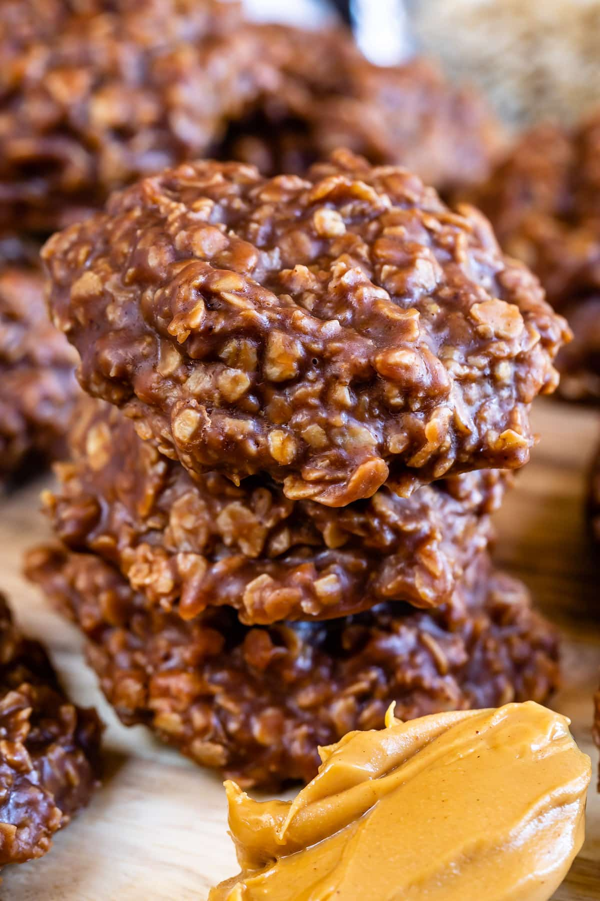

Preacher Cookies

Description
No bake oatmeal, cocoa, and peanut butter cookies that you can either drop on a pan or spread in a dish.
Ingredients
- 2 cups sugar
- 1/2 cup milk
- 1 stick unsalted butter
- 1/2 tsp. salt
- 2 cups rolled oats
- 1/2 cup cocoa
- 1 tsp. vanilla
- 1/2 cup peanut butter
Directions
- On the stove, cook sugar, milk, and butter. Stirring constantly.
- Once boiling, remove from heat and stir in the oatmeal, cocoa, salt, and peanut butter until well combined.
- Pour mixture into a greased baking pan or drop onto a cookie sheet lined with parchment paper.
- Let cool, and enjoy!